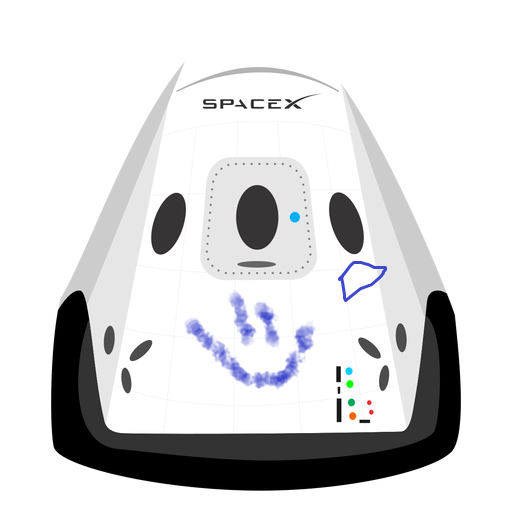

Hyperblog
Tu blog de
cabecera
Este es el tÃtulo atractivo e interesante del post
Y este es el párrafo de inicio donde vamos a explicar las cosas increíbles que se pueden hacer con ramas

Los blogs son la mejor forma de compartir información y tus ideas. Mucho mas que ir a conferencias o salir a Youtube. Excepto si eres un rockstar. Pero estadÃsticamente no lo eres.... por ahora.
Suscribete y dale like